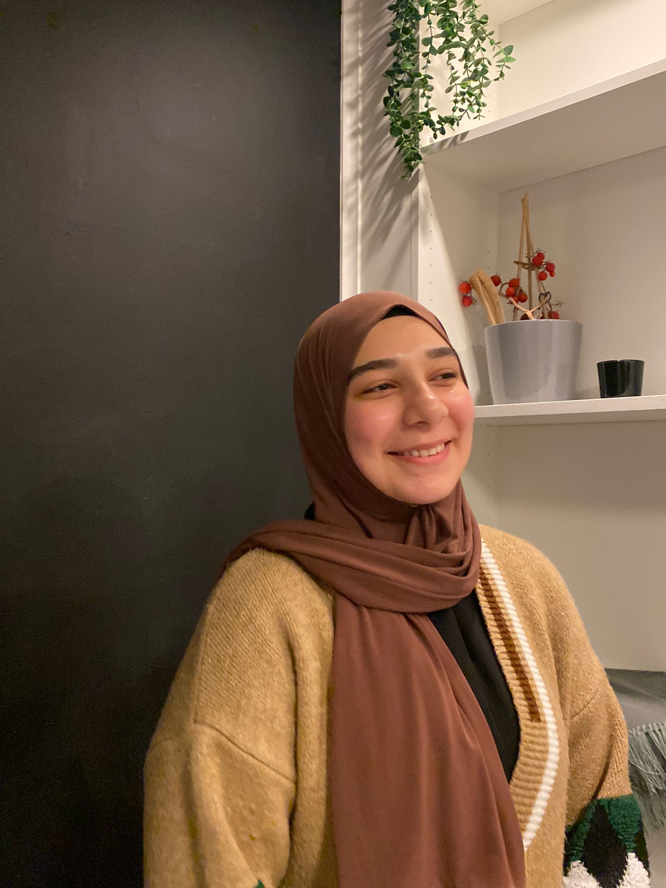

Sümeyye Köse
Student Systeem- en Netwerkbeheer

Wie ben ik?
Hoi, ik heet Sümeyye Köse. Ik ben 19 jaar en kom uit Antwerpen, België. Momenteel volg ik het eerste jaar van de graduaatsopleiding Systeem- en Netwerkbeheer. Mijn interesse in cryptografie en tekstcodering heeft me ertoe aangezet om deze richting te kiezen.
Buiten mijn studie houd ik me graag bezig met sudoku en luister
ik naar podcasts, vaak over true crime verhalen. Ik ben altijd bezig met bijleren, of het nu gaat om
nieuwe
technologieën of interessante onderwerpen die mijn nieuwsgierigheid wekken.
Mijn ambitie is om mijn kennis van cybersecurity verder te verdiepen. Ik wil ervoor zorgen dat beveiliging een topprioriteit blijft in onze snel ontwikkelende wereld en bijdragen aan een veiliger digitale omgeving.